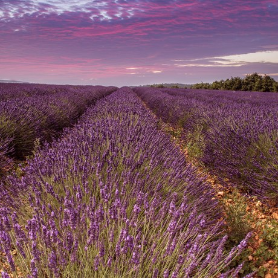

The green light came on Friday the 13th, and we all felt the gears change… inboxes went dark, a riverboat capsized on the Mississippi and every flight in the country was grounded for more than four hours. Now the fire's turned up. Today the Sun squares off with Jupiter, and tomorrow with Mars, both in Leo, so you'll feel a big rush to say yes to everything and do it all at once. Move with it, one step at a time… on Sunday the Sun moves into Sagittarius and the days start to feel lighter, and next Tuesday's Full Moon in Gemini brings completion. This week, choose the one thing you're ready to go big on, and the one thing you're ready to close out.
This Week's Sky
now
2:38am MT
10:49am MT
12:23am MT
7:53am MT
Last week I told you the green light would come on Friday, when Mercury and Venus both turned direct… and it came on loud.
On Thursday, a little before 11am MT, Microsoft 365 started going down. Outlook, Teams and more went out across the US, Europe and Asia, and Microsoft didn't have it all back until Saturday.
Friday at 8:53am MT, Mercury stood still and turned direct. Late that morning, a tanker lost its steering on the Mississippi and hit the American Heritage, a riverboat docked in New Orleans with nearly 200 people on board. It capsized within minutes and about 30 people went to the hospital, but every single person was accounted for; the mayor called it a “miracle on the Mississippi.”
Then at 1:54pm MT, the FAA stopped every flight in the country because of a telecommunications failure in air traffic control, and thousands of flights were canceled through Saturday. Venus turned direct at 5:27pm, and the planes were cleared to fly again at 6:15.
Here's the astrology underneath it… Uranus, the planet of sudden change, is moving through Gemini, the sign of how we talk, travel and connect, and Gemini is ruled by Mercury. So when Mercury stood still on Friday, everything it runs (the email, the routers, the flights, the steering) felt the jolt at once. Two planets changing direction on the same day is the whole sky shifting gears, and when the gears shift, the old wiring is the first thing to spark. Even the FAA's trouble came in the middle of an upgrade, with old copper lines being swapped for fiber.
Your body runs on the same wiring. If Thursday through Saturday felt jammed and glitchy, like nothing would connect, nothing's wrong with you; you were feeling the gears change, the old system grinding against the new one while the switch happens. Change rarely arrives quietly… and the noise doesn't mean it's going wrong, it means it's really happening.
Sources: CNBC, Nov 12 · ABC News, Nov 13 · CNN, Nov 13 · Wikipedia, 2026 FAA nationwide ground stop · planet times from the Swiss Ephemeris
This is the final week of COP31, the United Nations climate talks in Antalya, Türkiye, where nearly 200 countries are working out how we take care of a warming planet together. The talks close on Friday, November 20. By the end of the first week there was limited progress, and this week the ministers arrived to take on the hardest questions. One draft on the table would raise the money that helps countries adapt to a changing climate to at least $120 billion a year by 2035. On Saturday, police estimated more than 7,000 people marched in Antalya, the largest protest since the talks opened.
It's a lot of people at one table, learning how to agree on a future we all share… which is just what Saturn, Neptune and Uranus have us reviewing right now.
Be sure to care for your nervous system this week, and don't hold on to any energy that's not actually yours or that isn't going to serve you.
Sources: UN News, Nov 9 · Climate Home News, Nov 14 · Turkish Minute (AFP), Nov 16
Tina Abrams was sworn in on Tuesday, November 10, as the first woman ever elected president of the Seneca Nation, for a two-year term. The newly elected treasurer and clerk are women too, so for the first time women make up the nation's whole executive branch. Seneca women couldn't even vote in their nation's elections until 1964.
On protecting the nation's sovereignty, she said… “That fight will continue. I'm not going to let anybody push us around.”
Here in the United States, JoAnna Mendoza won Arizona's 6th District, and according to the veterans group VoteVets, she's the first woman Marine elected to Congress.
Sources: ICT, Nov 11 · WAMC, Nov 10 · AZFamily, Nov 5
In the Senate… on Thursday, Senator Chris Van Hollen of Maryland announced he's running against Chuck Schumer for Senate Majority Leader, saying “we need new leadership.” Schumer says he has the votes. Bernie Sanders and Senator-elect Abdul El-Sayed are backing Van Hollen, and Senator Elissa Slotkin had already called for new leadership. The senators vote by secret ballot next month, so Schumer keeping the top job isn't a sure thing anymore.
In the House… Hakeem Jeffries is on track to become the first Black Speaker of the House, and nobody has stepped up to run against him yet. A petition asking Representative Ayanna Pressley of Massachusetts to run has nearly 150,000 signatures. She hasn't said yes; her spokesperson says she's “in active conversations with Leader Jeffries” and “appreciates the groundswell of support.” The full House votes for Speaker in January.
If you'd like to call, here are last week's directions again. Depending on your state, it may be one, two or three calls; I made my three last week! Simply call the Capitol switchboard at (202) 224-3121, one call to each of your Democratic senators, and one to your representative. If you don't know who they are, you can give the operator your zip code. Every state has two senators, and each one gets their own vote, so if both of yours are Democrats, leave the message with both. If you don't know what to say, here's an easy script.
To your senator:“Hi, my name is [your name], and I’m a voter in [your zip code]. I would like Senator [their name] to not support Chuck Schumer for Majority Leader, or Cory Booker for Senate leadership. Instead, I would like them to support Senator Chris Van Hollen for Majority Leader, and I’m hoping that somebody new steps forward for Senate leadership. Thank you.”
To your representative:“Hi, my name is [your name], and I’m a voter in [your zip code]. I would like Representative [their name] to not support Hakeem Jeffries for Speaker, and instead encourage Representative Ayanna Pressley, or another new leader, to step forward and run. Thank you!”
If you get voicemail:Leave the same message, slowly, with your name and zip code, and you're done.
Sources: CNBC, Nov 13 · WGBH, Nov 16 · Axios, Nov 13 · CNN, Nov 8 · Senate.gov (switchboard) · Land Line (give the operator your zip code)
What We Can Do This Week
Close one loop before the Full Moon
Write down the conversations, texts and decisions still hanging open, pick one, and finish it before next Tuesday morning's Full Moon. It can be as simple as one honest text or one “yes, let's do it.”

Light the violet flame
The Violet Flame of the 7th Ray is Day 20 of my FREE 20-day meditation series… let it transmute whatever's ready to be complete this week.
Tap to startVirtual hugs,
Tamara 🌹
Three Videos I Loved This Week
Photos: the jet at dusk by RON ROV (CC0), cropped; Konyaaltı beach, Antalya, by Esginmurat (CC BY-SA 4.0), cropped, softened; Cattaraugus Creek at Lake Erie by Ken Winters, U.S. Army Corps of Engineers (public domain), cropped; the U.S. Capitol at dusk by the Architect of the Capitol (public domain), cropped; the journal by Jan Kahánek (CC0), cropped; lavender at dusk in Provence by Luis Ascenso (CC BY 2.0), cropped.


.jpg){kind=link}
.jpg){kind=link}
Get the weekly Rose Report
What the sky is doing to all of us, a woman stepping into her power, what's really happening in the world, a practice to calm your mind and a little story from my week.
Know someone who needs this? or email it to them, and they can subscribe right here.
Link copied
You're in. Check your inbox to confirm.